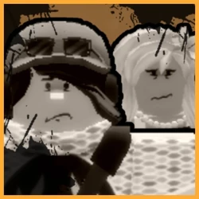
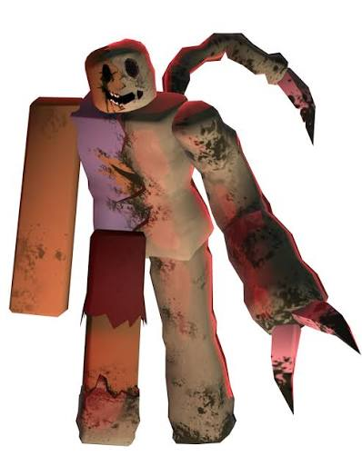
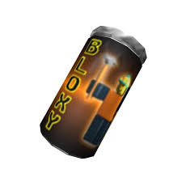
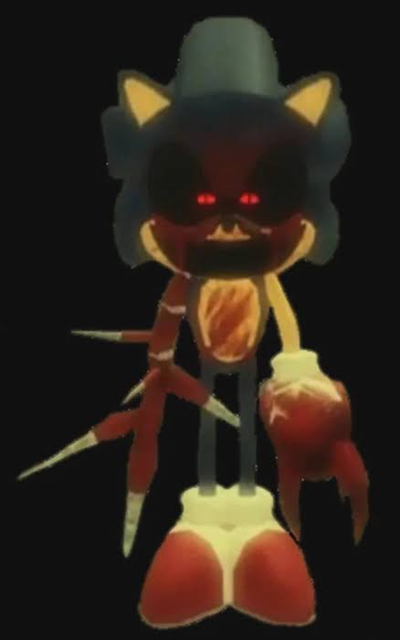
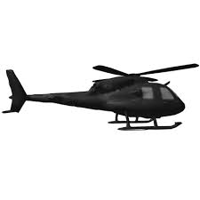

Rotas 06, conhecendo o jogo escondido pelas profundezas dos jogos famosos do Roblox, e descobrindo suas curiosidades

Rotas 06, conhecendo o jogo escondido pelas profundezas dos jogos famosos do Roblox, e descobrindo suas curiosidades

Sendo um Killer do jogo criado por Outlike, Kolossos serviu como inspiração para criação de Plague.


